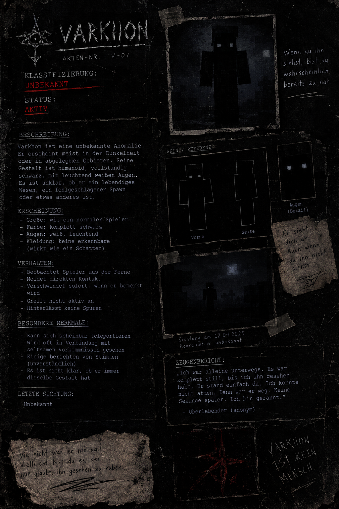
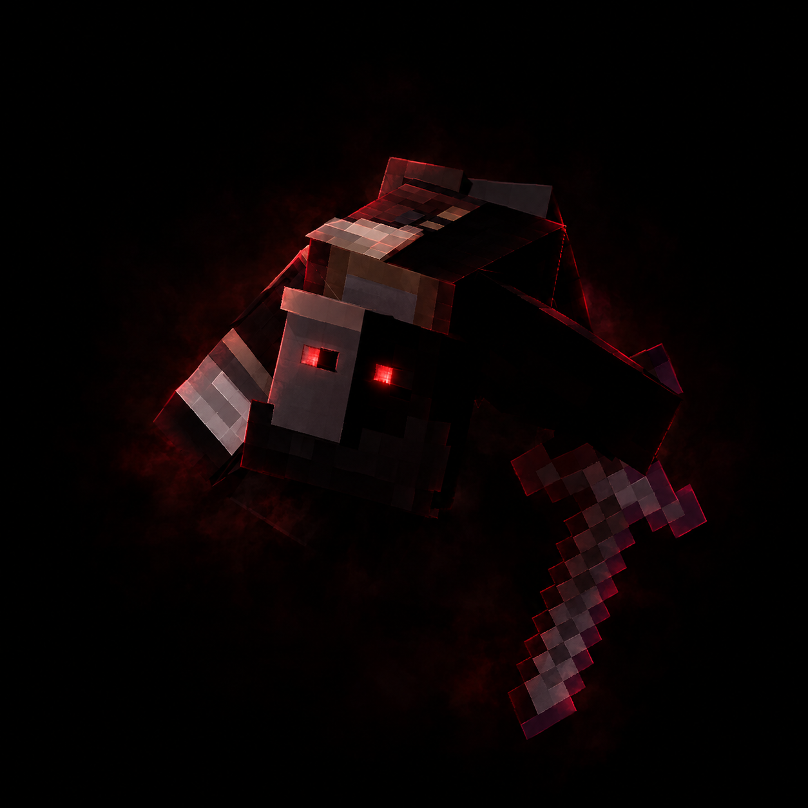

VARKHON — „DER SCHATTENZEUGE“

Diese Akte wurde angeblich außerhalb des Archivs gefunden. Mehrere Angaben widersprechen Zeugenaussagen. Sie gilt nicht als verifiziert.
KAEL VEYRON / VARKHON

Kael soll ein gewöhnlicher Bandit gewesen sein, bis seine Gruppe ihn verriet. Er überlebte – und verschwand.
Es ist nicht belegt, ob die Person aus dieser Akte mit der Gestalt aus V-07 identisch ist.
Die Gestalt

ABGERISSENER ZETTEL — TRANSKRIPTION
„Wenn du ihn siehst, bist du wahrscheinlich bereits zu nah.“
„Er sieht dich an. Auch wenn du ihn nicht siehst.“
„Vielleicht war er nie da. Vielleicht bist du es, der nur glaubt, ihn gesehen zu haben.“
Weitere Fundstücke
Das Zeichen † erscheint auf mehreren Fundstücken. Ob es eine Signatur, eine Markierung oder eine Warnung ist, konnte nicht geklärt werden.
Verknüpfte Akten: 016-A / V-07 / [FEHLT]
„Ich war alleine unterwegs. Es war komplett still, bis ich ihn gesehen habe. Er stand einfach da. Dann war er weg. Keine Sekunde später. Ich bin gerannt.“
Verfasser: anonym · Aussage nicht überprüfbar
Datum: 12.04.2025
Koordinaten: unbekannt
Ort: der Ort, an dem die Suche begann
Hinweis: Markiere die hellen Felder mit der Maus, um den verdeckten Text sichtbar zu machen.
16 Fragmente. Eine unvollständige Aussage.
Trage die markierten Wörter aus den Fundstücken in der Reihenfolge ein, in der du sie gefunden hast. Das Archiv speichert keine Eingaben.
Die Rekonstruktion wurde bestätigt.
„Unter dem Ort, an dem du zuerst nach mir gesucht hast, wartet die Wahrheit über Kael.“
Der nächste Eintrag wurde nicht hier abgelegt. Suche dort, wo das Zeichen † bereits vor deiner ersten Aufzeichnung stand.
Status: Hinweis freigegeben · Zielort nicht bestätigt